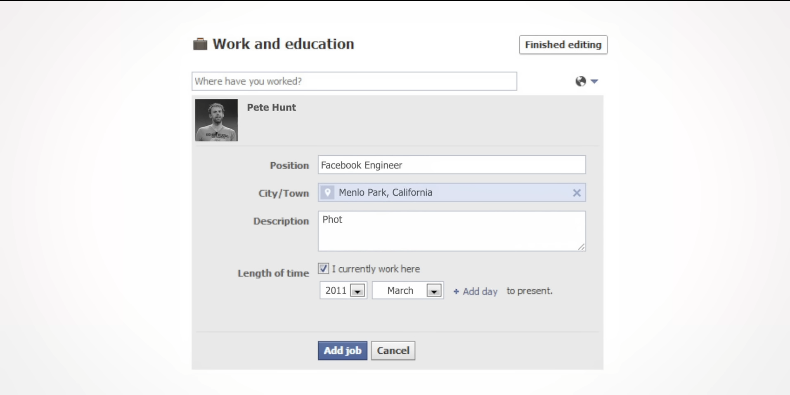
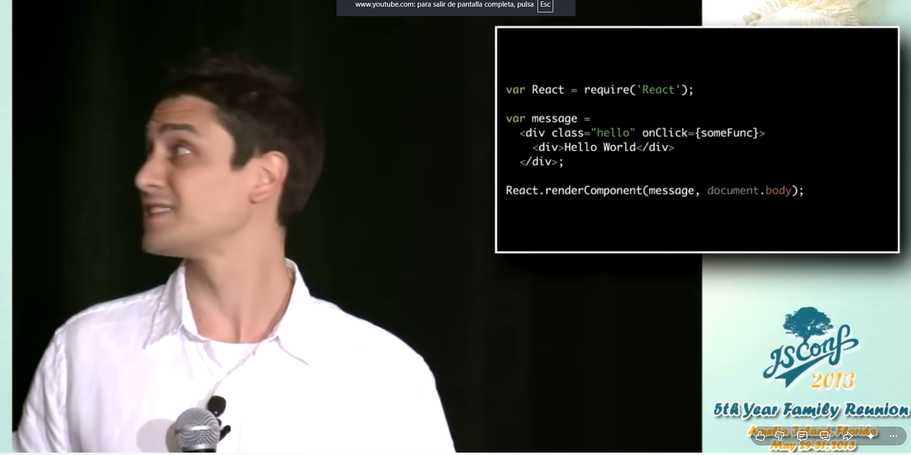
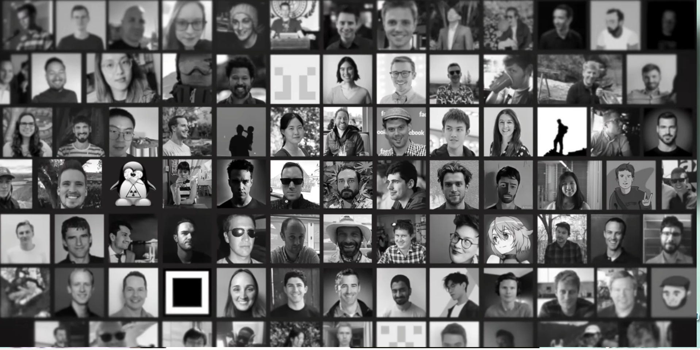

En 2011, las interfaces de Facebook eran tan complejas que los métodos tradicionales de programación generaban constantes errores y ralentizaban la plataforma. Gestionar las actualizaciones en tiempo real se volvió un dolor de cabeza insostenible para los ingenieros.
El ingeniero Jordan Walke propuso una solución radical y contraria a los dogmas de la época: en lugar de buscar y modificar partes específicas de la pantalla cuando cambiaban los datos, el sistema simplemente volvería a renderizar toda la interfaz conceptualmente.
Al lanzarse como código abierto en 2013, la comunidad de desarrolladores lo odió. La introducción de JSX (mezclar HTML con JavaScript) rompía las "buenas prácticas" establecidas, haciendo que muchos pensaran que el proyecto nacería muerto.



El equipo cambió de estrategia para explicar la ingeniería detrás de sus decisiones en lugar de solo "vender" la herramienta. El éxito rotundo al construir Instagram Web y la migración total de Netflix demostraron el verdadero potencial de React a gran escala.
A diferencia de otros frameworks de la época, Facebook decidió mantener a React pequeño y enfocado exclusivamente en la interfaz de usuario. Esto impulsó a la comunidad global a innovar y crear sus propias herramientas complementarias (como Redux).
El documental concluye que el éxito de React no se debió al dinero corporativo de Facebook, sino a la persistencia de un pequeño grupo de desarrolladores apasionados que lograron transformar una librería criticada en el estándar global de la web.